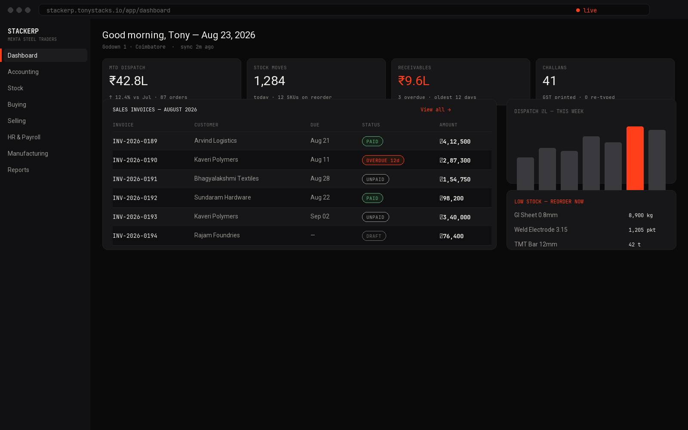

TONY STACKS / Products / StackERP
LIVE DEMO · ERP + INVENTORY + HRThe nervous system for a real company: accounting, stock, dispatch, HR and payroll in one system — seeded with a trading house's actual flows. 4,200 SKUs. 1,284 stock moves a day. Invoices you can open right now.
▲ Dashboard → dispatch bar chart → sales invoices with PAID / OVERDUE states. Everything above is clickable in the demo.

▲ The owner's morning screen: ₹42.8L MTD, 12 SKUs on reorder, ₹9.6L receivables with ageing.
Multi-warehouse stock, batch/serial tracking, barcode ops, reorder automation. The number on screen is the number in the godown.
GL, AR/AP, taxes, multi-currency. Sales invoices carry PAID / OVERDUE / DRAFT states your accountant accepts.
Per-week dispatch schedule tied to challans and delivery notes — the screen the floor actually watches.
Attendance, leave, appraisals, salary slips — the people side handled in the same login.
Supplier RFQs, purchase orders, landed costs — procurement without spreadsheet ping-pong.
BOMs, work orders, job cards, capacity planning — when you add a line, the ERP already speaks it.
Honest open-core credit: StackERP runs on ERPNext (GPL-3.0). We rebrand, harden, host and operate it — and we say so. Original project: frappe/erpnext. License and commit history kept public.
Send a CSV of 50 products — I'll return a staging login seeded with your data in 5 days. No pitch deck.